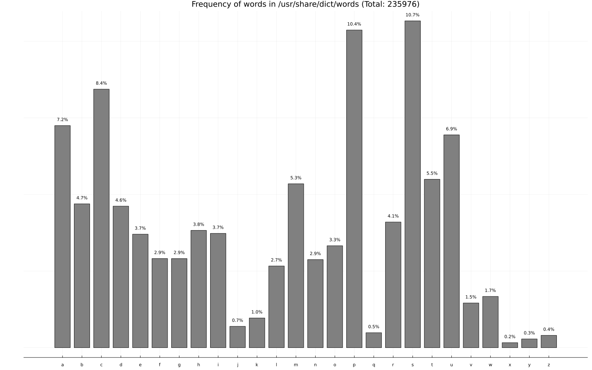
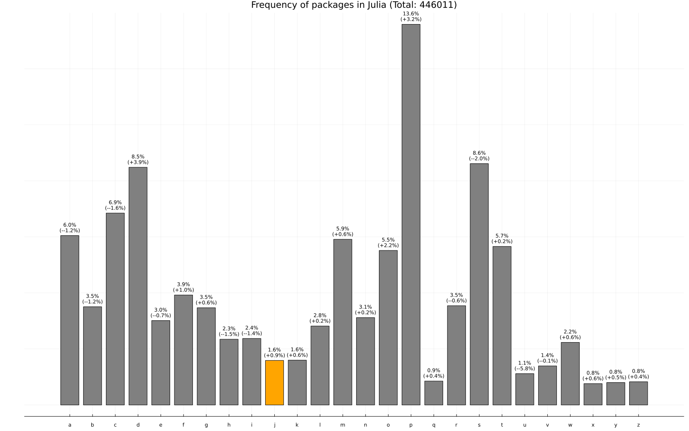
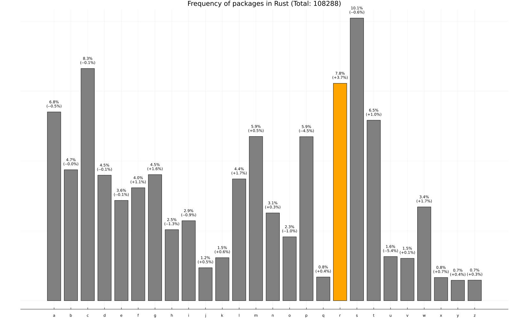
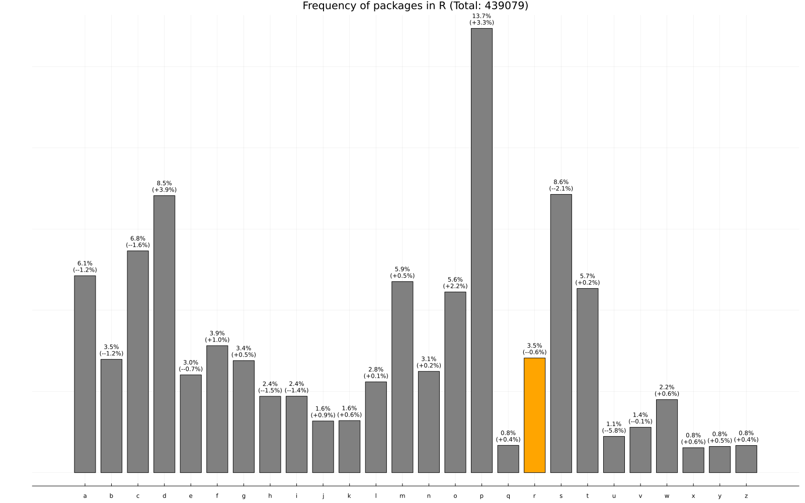
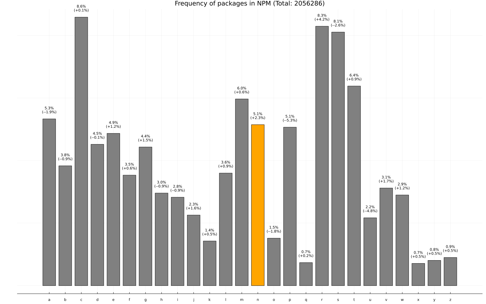
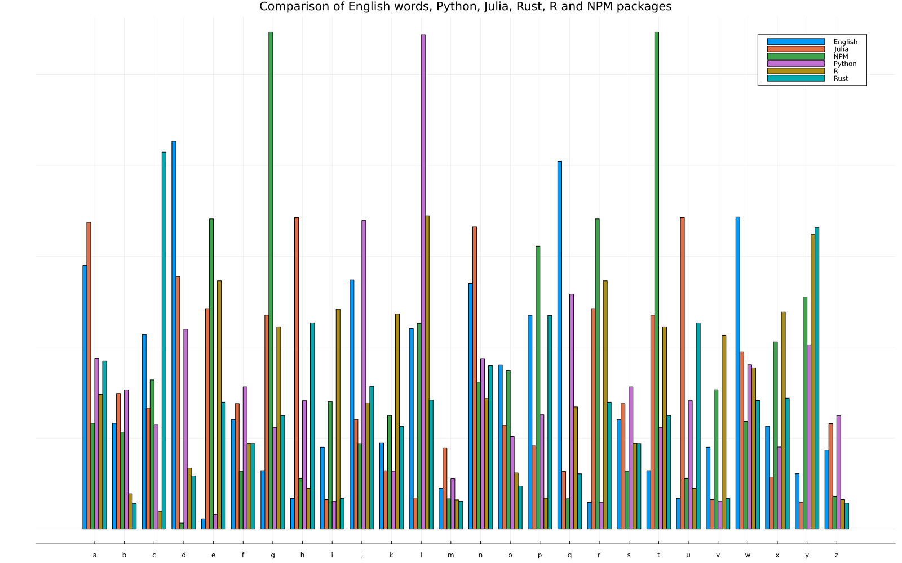

Code
using Pkg
Pkg.activate(@__DIR__)
Pkg.add("Plots")
Pkg.add("StatsPlots")
Pkg.add("DataStructures")
Pkg.add("HTTP")
Pkg.add("JSON3")
Pkg.add("DataFrames")
Pkg.add("CSV")
Pkg.add("CodecZlib")
Pkg.add("Tar")Are there trends in choosing package names in various programming ecosystems? Do package authors choose names for their packages that are alliterated with the name of the programming language? Let’s venture to find out.
First let’s install a couple of useful packages.
using Pkg
Pkg.activate(@__DIR__)
Pkg.add("Plots")
Pkg.add("StatsPlots")
Pkg.add("DataStructures")
Pkg.add("HTTP")
Pkg.add("JSON3")
Pkg.add("DataFrames")
Pkg.add("CSV")
Pkg.add("CodecZlib")
Pkg.add("Tar")We can bucket
the package names by their starting letter and count the number of packages in each bucket, i.e. a frequency plot.
using Plots
using DataStructures
using HTTP
using Markdown
function get_buckets(items)
buckets = DefaultDict(0)
items = strip.(items)
for item in items
buckets[lowercase(first(item))] += 1
end
total = sum(values(buckets))
for (k, v) in buckets
buckets[k] = v / total
end
(buckets, total)
end
function frequency_plot((buckets, total); lang, kind="packages")
fig_size = (800, 600)
names = [k for k in sort(collect(keys(buckets)))]
colors = DefaultDict("grey")
percent = DefaultDict("")
starting_letter = first(lowercase(lang))
if kind == "packages"
colors[starting_letter] = "orange"
for (k, v) in buckets
p = round((buckets[k] - WORD_BUCKETS[k]) * 100, digits=1)
percent[k] = "\n($(sign(p) > 0 ? '+' : '-')$(p)%)"
end
end
ax = bar([buckets[n] for n in names], xticks=(1:length(names), names), fillcolor=[colors[n] for n in names], size=(1600, 1000), legend=false, yaxis=false)
annotate!(1:length(names), [buckets[n] + (1 / (kind == "packages" ? 350 : 500)) for n in names], [("$(round(buckets[n] * 100, digits=1))%$(percent[n])", 8) for n in names])
title!("Frequency of $kind in $lang (Total: $total)")
summary = if kind == "packages"
"""
The difference in percent of names of $lang packages starting with "$starting_letter" and words in the English language starting with "$starting_letter" is $(replace(strip(percent[starting_letter]), ")" => "", "(" => "")).
"""
else
""
end
(ax, summary)
end
nothingFor a reference case, let’s plot the distribution of words in the English language, per the list in /usr/share/dict/words on my MacOS 12.5.
words = open("/usr/share/dict/words") do f
readlines(f)
end
WORD_BUCKETS, WORD_TOTAL = get_buckets(words)
ax, summary = frequency_plot((WORD_BUCKETS, WORD_TOTAL), lang="/usr/share/dict/words", kind="words")
display(ax)
For Python, we can get the list of packages on PyPi using https://pypi.org/simple and get the names of all packages from the links.
r = HTTP.get("https://pypi.org/simple")
data = String(r.body)
lines = strip.(split(data, "\n"));
links = filter(startswith("<a href=\""), lines); # filter all the lines that start with a link
packages = first.(match.(r">(.*)</a>", links)); # get the contents of these links, using a regex match
packages = filter(name -> isletter(first(name)), packages); # get only packages that start with a letter.
PYTHON_BUCKETS, PYTHON_TOTAL = get_buckets(packages)
ax, summary = frequency_plot((PYTHON_BUCKETS, PYTHON_TOTAL), lang="Python")
display(ax)
display("text/markdown", summary)
The difference in percent of names of Python packages starting with p
and words in the English language starting with p
is +3.3%.
Personally, I’m surprised this difference isn’t higher.
When you install a package using Julia, it downloads a general registry into your home
directory, and we can traverse that directory only one level deep to figure out all the names of the packages in the registry.
general_folder = expanduser("~/.julia/registries/General")
for (root, folders, files) in walkdir(general_folder)
for folder in folders
if length(folder) > 1 && length(split(replace(root, general_folder => ""), "/")) == 2 && !endswith(folder, "_jll")
push!(packages, folder)
end
end
end
JULIA_BUCKETS, JULIA_TOTAL = get_buckets(packages)
ax, summary = frequency_plot((JULIA_BUCKETS, JULIA_TOTAL), lang="Julia", kind="packages")
display(ax)
display("text/markdown", summary)
The difference in percent of names of Julia packages starting with j
and words in the English language starting with j
is +0.9%.
https://crates.io conveniently has a data-access page that links to the latest dump which contains a csv file with the names of all the packages.
using DataFrames
using CSV
using Tar
using CodecZlib
tmp = tempname()
download("https://static.crates.io/db-dump.tar.gz", tmp)
folder = open(tmp) do file
Tar.extract(GzipDecompressorStream(file))
end
filename = joinpath(folder, only(readdir(folder)), "data/crates.csv")
packages = DataFrame(CSV.File(filename))[!, :name]
RUST_BUCKETS, RUST_TOTAL = get_buckets(packages)
ax, summary = frequency_plot((RUST_BUCKETS, RUST_TOTAL), lang="Rust")
display(ax)
display("text/markdown", summary)
The difference in percent of names of Rust packages starting with r
and words in the English language starting with r
is +3.7%.
For R, similar to Python, we can parse the HTML from https://cran.r-project.org/web/packages/available_packages_by_name.html:
r = HTTP.get("https://cran.r-project.org/web/packages/available_packages_by_name.html")
data = String(r.body)
lines = split(data, "\n")
lines = filter(line -> startswith(line, "<td><a href=\""), lines)
packages = first.(match.(r">(.*)</a>", links))
packages = filter(name -> isletter(first(name)), packages)
R_BUCKETS, R_TOTAL = get_buckets(packages)
ax, summary = frequency_plot((R_BUCKETS, R_TOTAL), lang="R")
display(ax)
display("text/markdown", summary)
The difference in percent of names of R packages starting with r
and words in the English language starting with r
is –0.6%.
This is also a rather surprising result.
For NPM packages, https://replicate.npmjs.com/_all_docs contains a 228 MB json that contains all the packages.
using JSON3
data = JSON3.read(read(expanduser("~/Downloads/_all_docs"), String))
packages = map(data[:rows]) do elem
last(split(elem[:id], "/"))
end
packages = filter(name -> isletter(first(name)), packages)
NPM_BUCKETS, NPM_TOTAL = get_buckets(packages)
ax, summary = frequency_plot((NPM_BUCKETS, NPM_TOTAL), lang="NPM")
display(ax)
display("text/markdown", summary)
The difference in percent of names of NPM packages starting with n
and words in the English language starting with n
is +2.3%.
Here’s a plot comparing the normalized values:
using StatsPlots
groupedbar(repeat('a':'z', inner=6), hcat([
[WORD_BUCKETS[letter] for letter in 'a':'z'],
[PYTHON_BUCKETS[letter] for letter in 'a':'z'],
[JULIA_BUCKETS[letter] for letter in 'a':'z'],
[RUST_BUCKETS[letter] for letter in 'a':'z'],
[R_BUCKETS[letter] for letter in 'a':'z'],
[NPM_BUCKETS[letter] for letter in 'a':'z'],
]...), title="Comparison of English words, Python, Julia, Rust, R and NPM packages", group=repeat(["English", "Python", "Julia", "Rust", "R", "NPM"], outer=26), yaxis=false, size=(1600, 1000))
Even though there is a greater percentage of packages whose name starts with the same letter as the name of the programming language compared to the average distribution of words in the English language, it is not by as big a margin as I was expecting.
@online{krishnamurthy2022,
author = {Krishnamurthy, Dheepak},
title = {Programmers’ Preferences for Package Names},
date = {2022-07-29},
url = {https://kdheepak.com/blog/programmers-preferences-for-package-names},
langid = {en}
}